reports-server sobre el cluster forms_report, alineado con Forms
Guía paso a paso para crear la task definition reports-server
y el servicio correspondiente en el cluster forms_report
(Managed Server WLS_REPORTS), reutilizando la imagen ECR, el EFS
rector-dev, la red y el namespace Cloud Map forms.local
ya validados con los servicios forms-admin y forms-server
(ver guía ECS Forms).
Service Discovery, dominio en EFS y validación funcional de Reports.
La infraestructura compartida (cluster, EFS, VPC, SG, roles, namespace Cloud Map,
ruta a la BD en Pub-RT) ya existe desde el levantamiento de Forms.
Para Reports solo cambian nombres, puertos, el script de entrada y el registro DNS.
| Concepto | Valor |
|---|---|
| Cluster | forms_report |
| Imagen ECR | 730335573515.dkr.ecr.us-east-1.amazonaws.com/forms-docker:r2 (o su digest @sha256:…). No usar r1: le faltan las librerías Motif/X11 del motor de Reports. Usar la misma imagen en forms-admin, forms-server y reports-server. |
| EFS | fs-08471cc88d2a8edc3 (rector-dev) |
| VPC | vpc-055a4007418b34e64 |
| Subnet |
Solo pública: subnet-01212efd4a9ce759b (pub-A-SN)Acceso a Oracle 192.168.229.137 vía ruta ya existente en Pub-RT.
|
| SG tarea | sg-0e1787d32bac71fcd (forms-sg-ecs) — ya tiene NFS 2049 hacia EFS |
| Rol ejecución | ecsTaskExecutionRole |
| Rol tarea (Exec) | ecs-forms-admin-task-role (reutilizable) |
| Namespace Cloud Map | forms.local (ns-r3zqawwpjtp5pzue) |
| Nombre familia TD | reports-server |
| Nombre servicio | reports-server |
| Nombre contenedor | reports-server |
| Managed Server | WLS_REPORTS (Machine ReportsMachine) |
| DNS Discovery | weblogic-reports.forms.local |
Los tres hosts del dominio se usan con FQDN desde el principio, igual que en la guía de Forms (Paso 0 — nombres Cloud Map):
| Machine | listen-address / ListenAddress | Node Manager |
|---|---|---|
AdminServerMachine | weblogic-admin.forms.local | nodemanager/ |
FormsMachine | weblogic-forms.forms.local | nodemanager_forms/ |
ReportsMachine | weblogic-reports.forms.local | nodemanager_reports/ |
Con AdminServer y managed servers detenidos, desde el contenedor admin como oracle:
/u01/oracle/scripts/set-cloudmap-hostnames.sh --check /u01/oracle/scripts/set-cloudmap-hostnames.sh
--check debe mostrar las tres líneas con
.forms.local y no hay que hacer nada más (el Paso 11 queda como verificación).
Requiere también la regla interna Todo el tráfico en forms-sg-ecs (Paso 9).
forms-server| Concepto | Forms | Reports |
|---|---|---|
| Servicio compose | forms / weblogic-forms | reports / weblogic-reports |
| Managed Server | WLS_FORMS | WLS_REPORTS |
| Puerto HTTP / HTTPS | 9001 / 9501 | 9012 / 9512 |
| Administration Port | 9991 | 9992 |
| Node Manager | 5556 (nodemanager_forms) | 5556 (nodemanager_reports) |
| Scripts EFS | .../scripts/forms | .../scripts/reports |
JAVA_OPTIONS | -Dforms.instance=forms1 | No aplica |
| Variables de compilación (rev. 9) | FORMS_PATH, FORMS_MODULE_PATH, FORMS_INSTANCE, FRMCMP, PROC, PCSCFG, PROC_INCLUDE, CC | No aplica (se compila en forms-server) |
TNS_ADMIN | $DOMAIN_HOME/config/fmwconfig | Igual |
| Log group | /ecs/forms-server | /ecs/reports-server |
| URL de prueba | /forms/frmservlet | /reports/rwservlet |
/domain):/aws-backup-restore_2020-04-19T22-54-07-041Z/domain_forms/domains/aws-backup-restore_2020-04-19T22-54-07-041Z/domain_forms/app/aws-backup-restore_2020-04-19T22-54-07-041Z/domain_forms/scripts/reports
scripts/reports exista en
el EFS con entrypoint.sh, startNodeManager.sh,
create-reports-machine.py, startWLSReports.sh,
create-reports-tools.py y prepare-reports-domain.sh
(origen: dist/scripts/reports/ del proyecto compose).
Si el rootDirectory no existe, la tarea falla al montar el volumen
(ResourceInitializationError … mount.nfs4: … No such file or directory).
Se puede comprobar desde el contenedor forms-admin (ECS Exec), que monta
domains con el mismo EFS, o montando temporalmente la raíz del EFS.
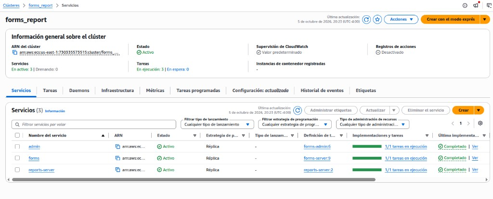
forms_report (Activo), pestaña Servicios: admin
(forms-admin:6), forms (forms-server:9) y reports-server
(reports-server:2), cada uno con 1/1 tareas en ejecución
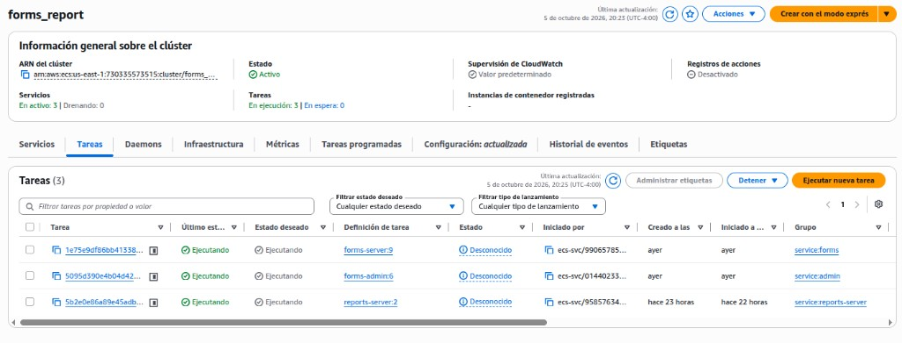
service:admin, service:forms, service:reports-server)
reports-serverforms-server (última revisión) → Crear nueva revisión
no sirve, porque cambiaría la familia de Forms. Para partir de la configuración de Forms usar
el JSON del anexo con Crear nueva definición de tarea con JSON.
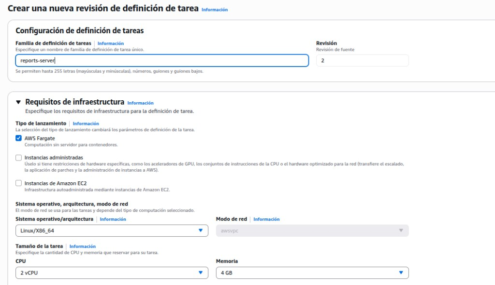
reports-server (pantalla de nueva revisión a partir de la revisión 2)| Campo | Valor |
|---|---|
| Tipo de inicio | AWS Fargate |
| SO / Arquitectura | Linux / X86_64 |
| CPU | 2 vCPU |
| Memoria | 4 GB (subir a 8 GB si hay reportes pesados o varios engines rwEng) |
| Rol de tarea | ecs-forms-admin-task-role |
| Rol de ejecución | ecsTaskExecutionRole |
rwEngine) adicionales a la JVM de
WLS_REPORTS; con 4 GB alcanza para pruebas con reportes modelo. Si aparece
OutOfMemoryError o la tarea se detiene con OutOfMemory /
exit code 137, crear una nueva revisión con 8 GB.
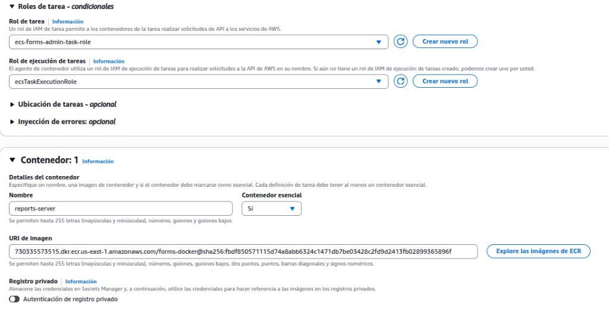
ecs-forms-admin-task-role + ejecución ecsTaskExecutionRole| Campo | Valor |
|---|---|
| Nombre | reports-server |
| Esencial | Sí |
| URI imagen | 730335573515.dkr.ecr.us-east-1.amazonaws.com/forms-docker:r2 (ver Anexo — imagen r2) |
| Puertos | 9012 / 9512 / 9992 / 5556 |
| Comando (pruebas) | Entrypoint sh,-c + comando sleep infinity |
| Comando (producción) | /u01/oracle/scripts/entrypoint.sh |
| Directorio de trabajo | /u01/oracle |
| Puerto | Protocolo | Nombre | App protocol | Uso |
|---|---|---|---|---|
9012 | TCP | wls-reports-http | HTTP | WLS_REPORTS HTTP (/reports/rwservlet) |
9512 | TCP | wls-reports-https | HTTP | WLS_REPORTS HTTPS |
9992 | TCP | wls-reports-admin | — | Administration Port del managed |
5556 | TCP | nodemanager | — | Node Manager ReportsMachine |
5558:5556 para no chocar
con admin y forms en el mismo host. En Fargate cada tarea tiene su propia ENI/IP, así que se
usa 5556 directo.
Variables de entorno (equivalentes al servicio reports del compose):
ORACLE_HOME=/u01/oracle DOMAIN_NAME=forms_domain DOMAIN_HOME=/u01/oracle/user_projects/domains/forms_domain TNS_ADMIN=/u01/oracle/user_projects/domains/forms_domain/config/fmwconfig ADMIN_SERVER_NAME=AdminServer ADMIN_SERVER_HOST=weblogic-admin.forms.local ADMIN_SERVER_PORT=7001 ADMIN_USER=weblogic ADMIN_PASSWORD=<usar Secrets Manager luego> MANAGED_SERVER_NAME=WLS_REPORTS MANAGED_SERVER_PORT=9012 NODE_MANAGER_PORT=5556 LD_LIBRARY_PATH=/u01/oracle/lib:/u01/oracle/oracle_common/lib
PATH=/u01/oracle/bin:…:${PATH}:
ECS no expande ${PATH} y el contenedor falla con
exec: "sleep": executable file not found in $PATH. Omitir PATH
o definirlo completo:
/u01/oracle/bin:/u01/oracle/oracle_common/bin:/usr/local/sbin:/usr/local/bin:/usr/sbin:/usr/bin:/sbin:/bin.
ADMIN_SERVER_HOST=weblogic-admin.forms.local ya resuelve vía Cloud Map
(registro creado en el servicio forms-admin). No usar el short name
weblogic-admin del compose.
reports-server (esencial) con imagen ECR fijada por digest
forms-docker@sha256:fbdf850571115d74a8abb6324c1471db7be03428c2fd9d2413fb02899365896f (imagen r2)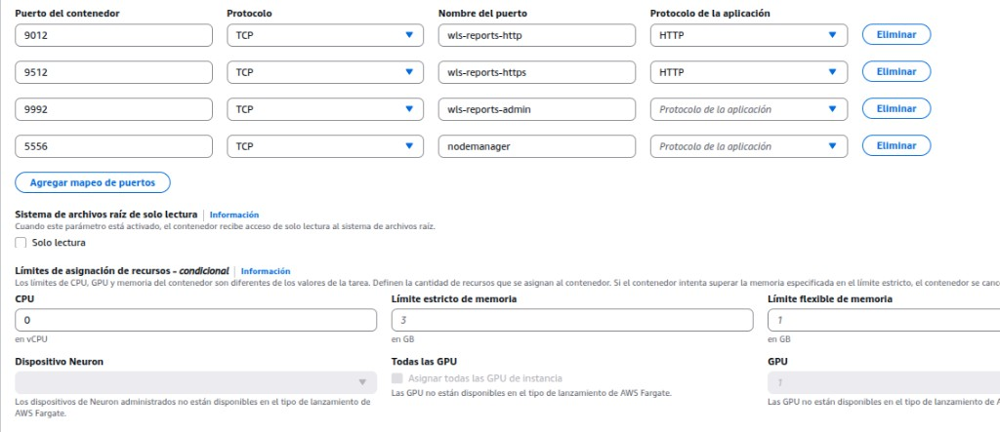
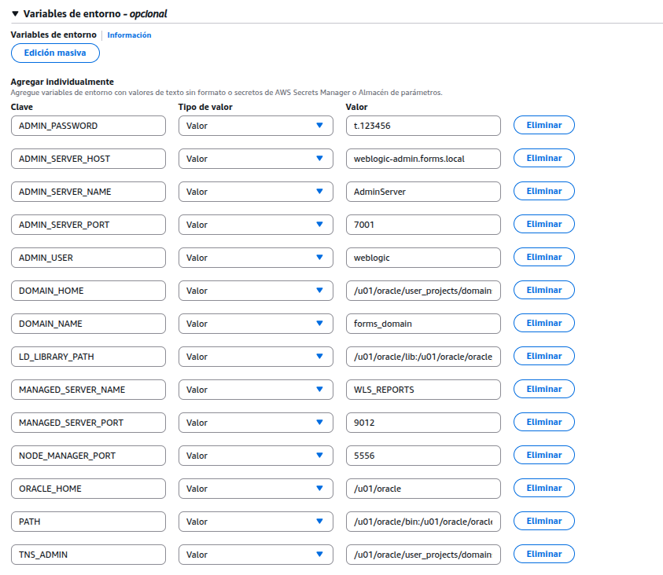
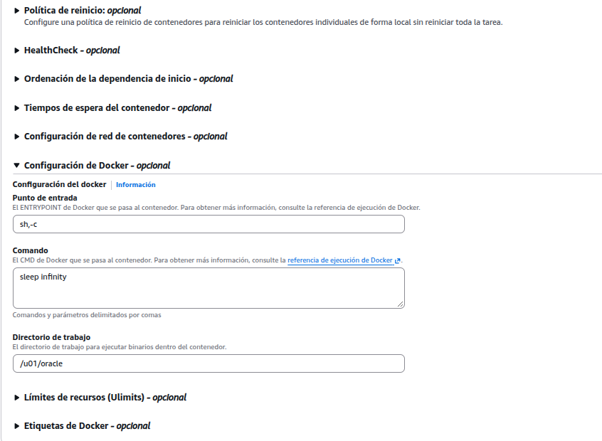
sh,-c, comando
sleep infinity, directorio de trabajo /u01/oracle
sleep infinity la tarea queda RUNNING sin arrancar WebLogic,
para entrar con ECS Exec, ajustar el dominio (Paso 11) y arrancar Node Manager /
WLS_REPORTS a mano (Paso 12). Cuando el arranque sea estable, crear una nueva
revisión con /u01/oracle/scripts/entrypoint.sh como comando.
| Campo | Valor |
|---|---|
| Almacenamiento efímero | 100 GiB (la imagen es grande; con el default de 20 GiB falla con no space left on device) |
| Volumen | File system | Root directory | Cifrado en tránsito |
|---|---|---|---|
efs-domains |
fs-08471cc88d2a8edc3 |
/aws-backup-restore_2020-04-19T22-54-07-041Z/domain_forms/domains |
Habilitado |
efs-app |
fs-08471cc88d2a8edc3 |
/aws-backup-restore_2020-04-19T22-54-07-041Z/domain_forms/app |
Habilitado |
efs-scripts |
fs-08471cc88d2a8edc3 |
/aws-backup-restore_2020-04-19T22-54-07-041Z/domain_forms/scripts/reports |
Habilitado |
/domain al root directory. El único cambio respecto a Forms es
scripts/forms → scripts/reports.
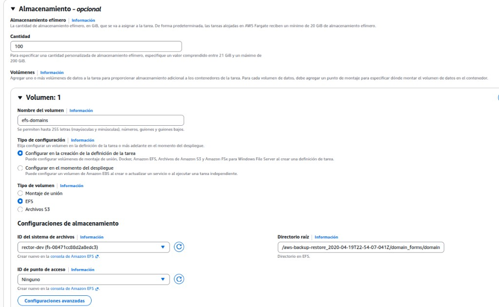
efs-domains en EFS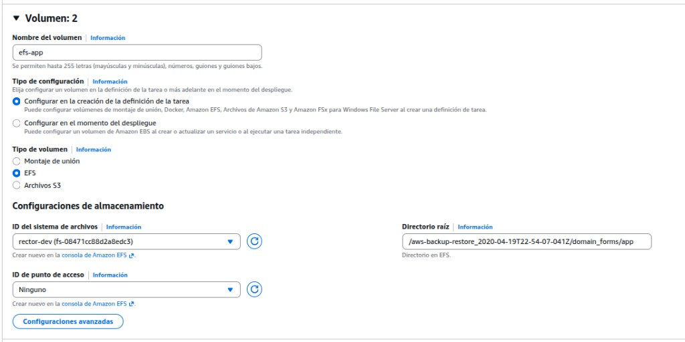
efs-app en EFS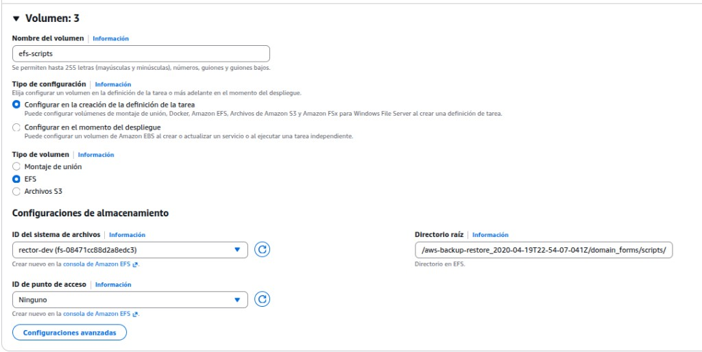
efs-scripts apuntando a scripts/reports| Volumen | Ruta contenedor | Solo lectura |
|---|---|---|
| efs-domains | /u01/oracle/user_projects/domains | No |
| efs-app | /u01/oracle/user_projects/apps | No |
| efs-scripts | /u01/oracle/scripts | No |
| Recopilación de logs | Valor |
|---|---|
| Driver | awslogs (CloudWatch) |
awslogs-group | /ecs/reports-server |
awslogs-create-group | true |
awslogs-region | us-east-1 |
awslogs-stream-prefix | ecs |
Crear la definición → queda reports-server:1.
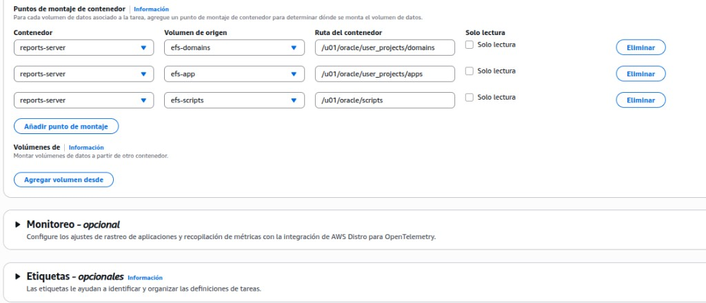
efs-domains → /u01/oracle/user_projects/domains,
efs-app → /u01/oracle/user_projects/apps, efs-scripts → /u01/oracle/scripts (lectura/escritura)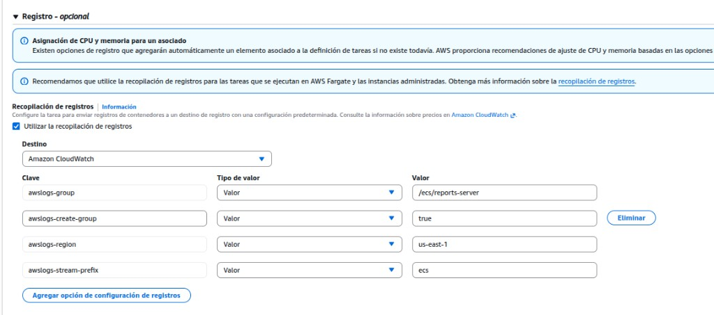
awslogs-group=/ecs/reports-server, awslogs-region=us-east-1,
awslogs-stream-prefix=ecs. awslogs-create-group=true no basta: el grupo se crea a mano (ver abajo)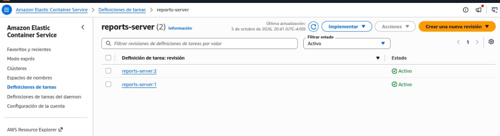
reports-server: revisiones reports-server:1
(creación inicial, imagen r1) y reports-server:2 (imagen r2), ambas activas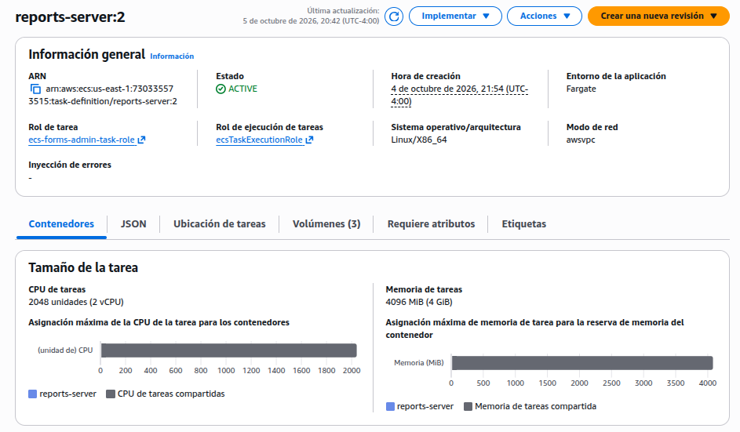
reports-server:2, la revisión vigente del servicio: ACTIVE, creada el 4 de octubre de 2026,
Fargate, Linux/X86_64, awsvpc, roles ecs-forms-admin-task-role / ecsTaskExecutionRole,
2 vCPU / 4 GiB y 3 volúmenes/ecs/reports-server en CloudWatch (obligatorio)awslogs-create-group=true, ecsTaskExecutionRole no tiene
logs:CreateLogGroup. Si el grupo no existe, la tarea queda Detenido con
ResourceInitializationError: failed to validate logger args ... AccessDeniedException ...
logs:CreateLogGroup. /ecs/forms-admin y /ecs/forms-server ya existían, por
eso no ocurrió con Forms.
/ecs/reports-server (con la barra inicial)aws logs create-log-group --log-group-name /ecs/reports-server --region us-east-1
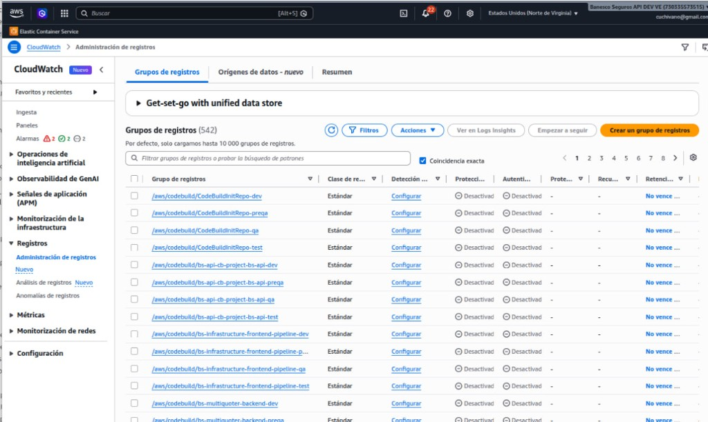
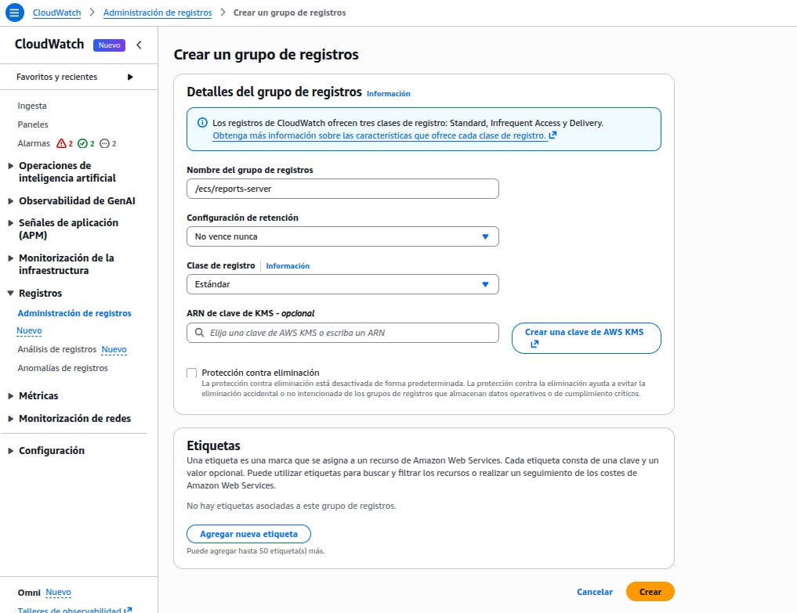
/ecs/reports-server, retención No vence nunca, clase Estándar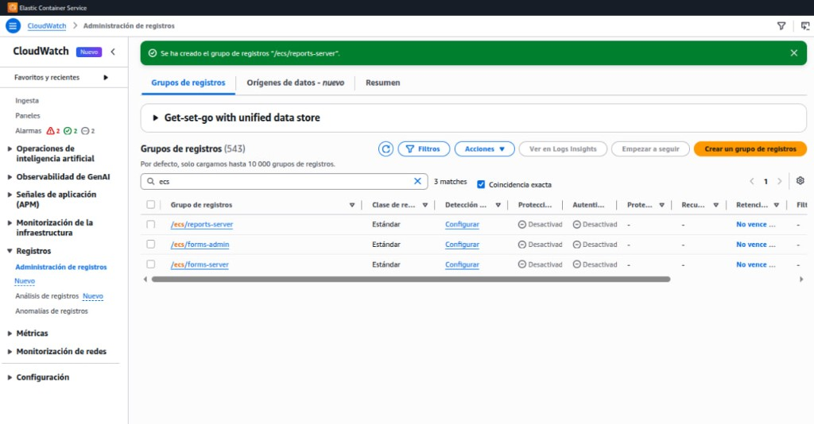
/ecs/reports-server junto a /ecs/forms-admin y /ecs/forms-server
Si el servicio ya se había creado y sus tareas fallaron por este motivo: reports-server →
Actualizar servicio → Forzar nueva implementación.
forms_report → Servicios → Crearreports-server, revisión más recientereports-server1LATEST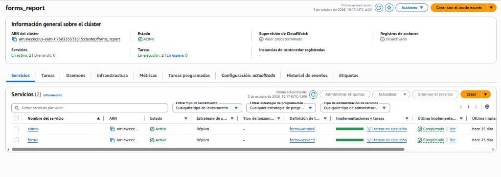
forms_report → Servicios: admin (forms-admin:6)
y forms (forms-server:9) en ejecución → Crear
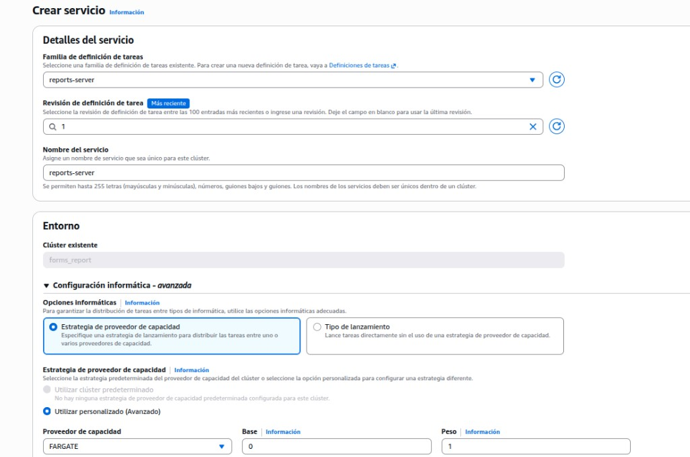
reports-server revisión 1, nombre reports-server;
estrategia de proveedor de capacidad personalizada: FARGATE, base 0, peso 1
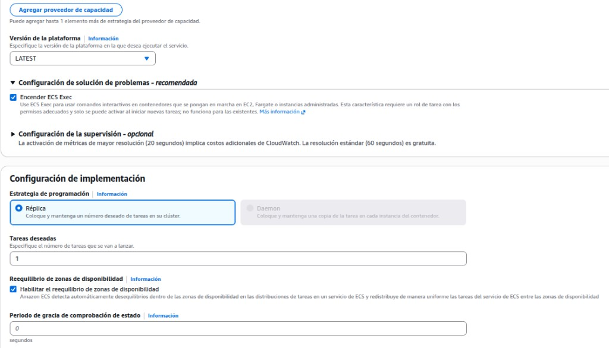
LATEST, ECS Exec encendido; implementación
Réplica con 1 tarea deseada y reequilibrio de zonas de disponibilidad habilitado
| Campo | Valor |
|---|---|
| Tipo de servicio | Réplica, desired = 1 |
| Estrategia | Actualización acumulativa |
| Mín. healthy % | 0 |
| Máx. % | 200 (si AZ rebalancing está ON) |
| Balanceador de carga / Auto scaling | No (por ahora) |
WLS_REPORTS
escribiendo sobre el mismo dominio en EFS (no es un cluster activo-activo).
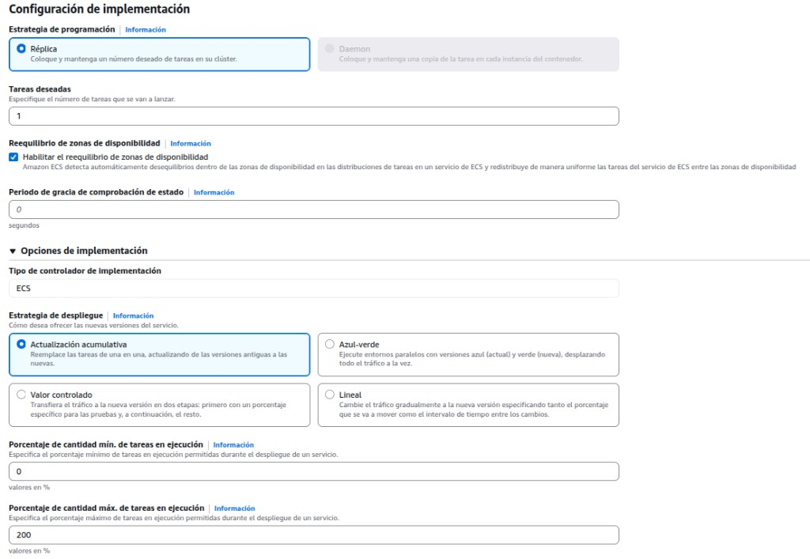
1 tarea deseada, reequilibrio de zonas habilitado;
controlador ECS, Actualización acumulativa, mín 0 % / máx 200 %
weblogic-reportsPendiente
Mismo esquema que weblogic-admin en el servicio forms-admin.
Registra la IP privada de la tarea como weblogic-reports.forms.local, que es el
host que usan ReportsMachine, el Node Manager de Reports y Coherence WKA.
| Campo | Valor |
|---|---|
| Utilizar la detección de servicios | Marcado |
| Espacio de nombres | Existente: forms.local (ns-r3zqawwpjtp5pzue) |
| Servicio de detección | Crear un nuevo servicio de detección |
| Nombre de detección | weblogic-reports |
| DNS resultante | weblogic-reports.forms.local |
| Propagación estado ECS | Habilitada |
| Tipo de registro DNS | A |
| TTL | 15 |
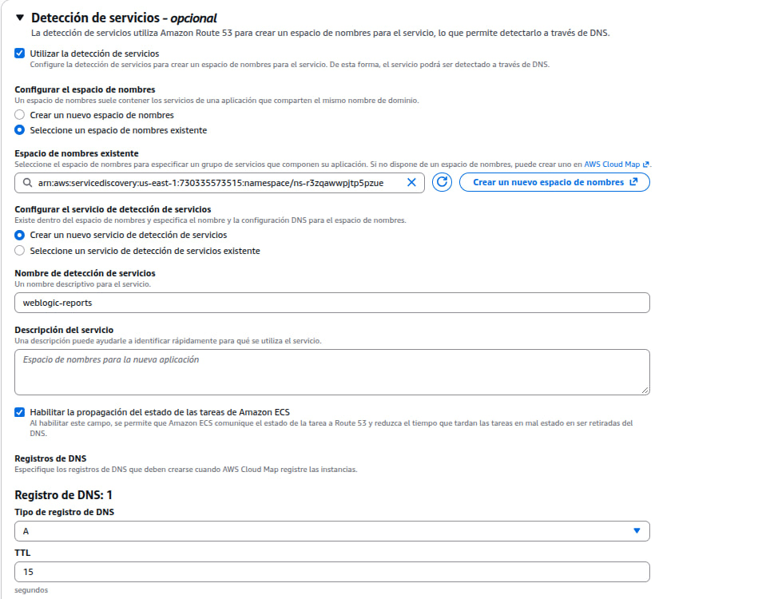
forms.local
(ns-r3zqawwpjtp5pzue), nuevo servicio weblogic-reports,
propagación de estado ECS habilitada, registro A, TTL 15
| Campo | Valor |
|---|---|
| VPC | vpc-055a4007418b34e64 |
| Subnet del servicio | Solo subnet-01212efd4a9ce759b / vpc-Banesco-Seguros-VE-dev-pub-A-SN |
| Security group | sg-0e1787d32bac71fcd (forms-sg-ecs) |
| IP pública | ENABLED |
| BD Oracle | 192.168.229.137 vía peering pcx-0ad20c217472c7080 (ruta ya existente en Pub-RT) |
database-A. Si el servicio incluye ambas subnets, ECS puede
colocar la tarea en la privada: la IP pública queda asignada pero no responde desde Internet
(salida por NAT, no por IGW). La ruta 192.168.229.137/32 → pcx en Pub-RT
ya da acceso a Oracle desde pub-A.
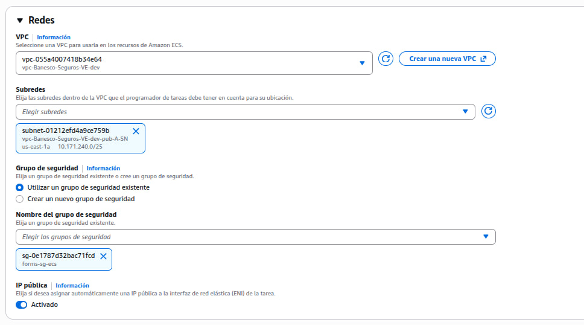
vpc-055a4007418b34e64, solo
subnet-01212efd4a9ce759b (pub-A-SN, us-east-1a, 10.171.240.0/25),
SG forms-sg-ecs, IP pública activada
forms-sg-ecs (consola EC2, sesión aparte)
Las reglas no se editan en el asistente del servicio: EC2 → Grupos de seguridad
→ forms-sg-ecs → Editar reglas de entrada.
| Puerto | Uso | Origen recomendado |
|---|---|---|
9012 | Reports HTTP (rwservlet) | My IP /32 o red corporativa |
9512 | Reports HTTPS | No se abre (HTTPS no se usa en DEV) |
9992 | Administration Port WLS_REPORTS | Solo SG interno (forms-sg-ecs → forms-sg-ecs) |
5556 | Node Manager ReportsMachine | Solo SG interno (el AdminServer lo usa para arrancar WLS_REPORTS) |
7574 UDP | Coherence (descubrimiento WKA entre WLS_FORMS y WLS_REPORTS) | Solo SG interno |
forms-sg-ecs, una sola regla
Todo el tráfico con origen sg-0e1787d32bac71fcd (el propio SG) cubre
AdminServer ↔ Node Manager ↔ managed (TCP) y Coherence (UDP 7574; el cluster
defaultCoherenceCluster lo comparten cluster_forms y cluster_reports)
sin abrir esos puertos a Internet. Si ya existe Todos los TCP desde el SG, agregar
Todos los UDP con el mismo origen.
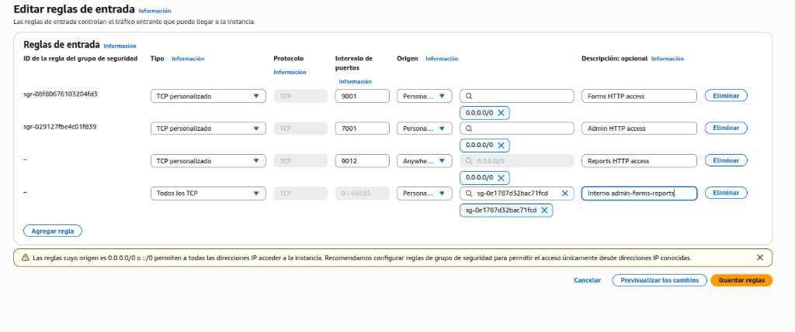
forms-sg-ecs: se agregan 9012
(Anywhere-IPv4, Reports HTTP access) y Todos los TCP con origen
sg-0e1787d32bac71fcd (Interno admin-forms-reports), elegido en el buscador
bajo Grupos de seguridad
0.0.0.0/0 en 9012; reemplazar por la tabla
anterior antes de pasar a QA/PROD.
Revisar el resumen y pulsar Crear. La consola vuelve al clúster con el aviso “La implementación de reports-server está en curso” (se despliega vía CloudFormation).
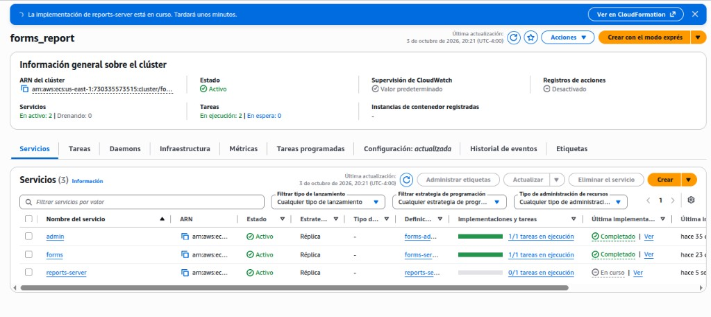
forms_report con 3 servicios;
admin y forms en 1/1, reports-server en 0/1 con la implementación
En curso (pasa a 1/1 en unos minutos)
forms.local → weblogic-reports: debe aparecer una instancia con la IP privada de la tarea.oracle (para que apliquen las variables de la TD):aws ecs execute-command \ --cluster forms_report \ --task <TASK_ID> \ --container reports-server \ --interactive \ --command "su - oracle"
# Montajes
df -h | grep -E 'domains|apps|scripts'
ls /u01/oracle/user_projects/domains/forms_domain
ls /u01/oracle/scripts # entrypoint.sh, startNodeManager.sh, create-reports-machine.py
# Variables
env | grep -E 'ADMIN_|MANAGED_|DOMAIN_'
# DNS Cloud Map: debe coincidir con la IP VPC de la tarea (eth1), no con 169.254.x.x
getent hosts weblogic-reports.forms.local
getent hosts weblogic-admin.forms.local
ip -4 -o addr show | awk '{print $2,$4}'
# AdminServer alcanzable
timeout 5 bash -c 'echo >/dev/tcp/weblogic-admin.forms.local/7001' && echo OK || echo FAIL
# BD Oracle alcanzable
timeout 5 bash -c 'echo >/dev/tcp/192.168.229.137/1521' && echo OK || echo FAIL
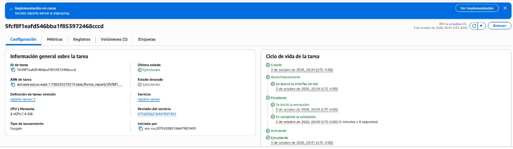
reports-server:1 en Ejecutando (2 vCPU / 4 GiB, Fargate).
La extracción de la imagen tardó ~5 min, por lo que el primer arranque toma 6–7 min.
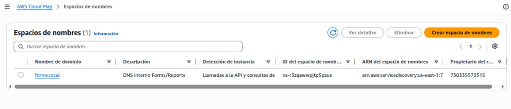
forms.local (ns-r3zqawwpjtp5pzue),
"DNS interno Forms/Reports"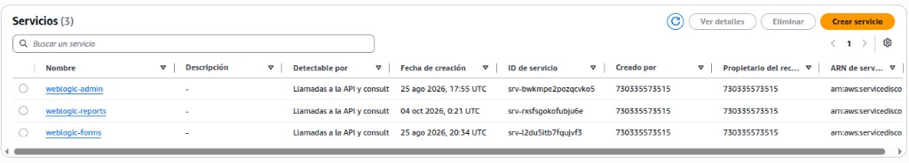
forms.local: weblogic-admin, weblogic-forms y
weblogic-reports (srv-rxsfsgokofubju6e, creado el 4 de octubre de 2026 al crear el servicio ECS)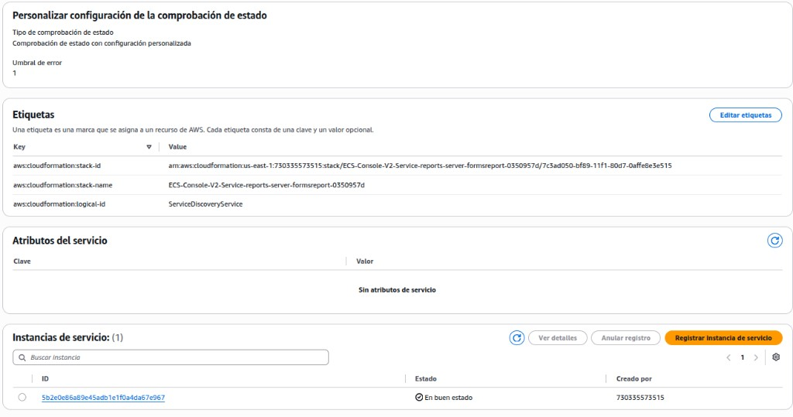
weblogic-reports: una instancia registrada, cuyo ID es el de la tarea ECS
(5b2e0e86a89e45adb1e1f0a4da67e967), en buen estado. Las etiquetas muestran que la creó la consola ECS
(stack ECS-Console-V2-Service-reports-server-…)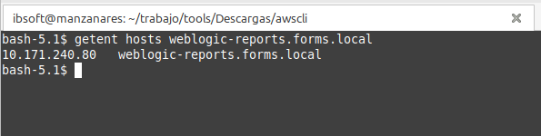
weblogic-reports.forms.local → 10.171.240.80
(IP privada de la tarea; cambia en cada redeploy)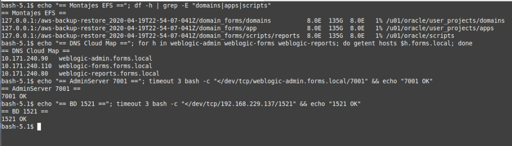
reports-server: los tres montajes EFS (domains, app,
scripts/reports); Cloud Map resuelve weblogic-admin (10.171.240.90), weblogic-forms
(10.171.240.110) y weblogic-reports (10.171.240.80); AdminServer 7001 OK y BD
192.168.229.137:1521 OKweblogic-reports.forms.localPendiente
El dominio se creó con hostnames de compose (weblogic-reports). En ECS ese short
name no resuelve; hay que llevarlo al FQDN de Cloud Map, igual que se hizo con
weblogic-admin en la guía de Forms (Paso 12).
set-cloudmap-hostnames.sh (Paso 0), este paso es solo de
verificación: /u01/oracle/scripts/set-cloudmap-hostnames.sh --check en el contenedor
admin. La edición manual de abajo queda como referencia (es lo que hace el script).
config.xml no se sobrescriba.
| Archivo / objeto | Cambio |
|---|---|
$DOMAIN_HOME/nodemanager_reports/nodemanager.properties |
ListenAddress=weblogic-reports.forms.local |
$DOMAIN_HOME/config/config.xml → Machine ReportsMachine |
Node Manager <listen-address>weblogic-reports.forms.local</listen-address>, puerto 5556 |
$DOMAIN_HOME/config/config.xml → Server WLS_REPORTS |
listen-address vacío o weblogic-reports.forms.local (nunca el short name) |
Auditoría rápida:
cd "$DOMAIN_HOME" cp -a config/config.xml config/config.xml.bak-$(date +%Y%m%d%H%M%S) cp -a nodemanager_reports/nodemanager.properties nodemanager_reports/nodemanager.properties.bak-$(date +%Y%m%d%H%M%S) grep -RIn --exclude-dir=tmp --exclude-dir=cache --exclude='*.log' \ -E 'weblogic-reports([^.]|$)' \ "$DOMAIN_HOME/nodemanager_reports" "$DOMAIN_HOME/config" /u01/oracle/scripts 2>/dev/null | head -80 grep -n 'ListenAddress' "$DOMAIN_HOME/nodemanager_reports/nodemanager.properties"
Ejemplo de ajuste del Node Manager:
sed -i 's/^ListenAddress=.*/ListenAddress=weblogic-reports.forms.local/' \ "$DOMAIN_HOME/nodemanager_reports/nodemanager.properties"
scripts/reports/create-reports-machine.py ya usa por defecto
weblogic-reports.forms.local y t3://weblogic-admin.forms.local:7001
(toma ADMIN_SERVER_HOST del entorno; en compose exportar CLOUDMAP_NAMESPACE=''
para volver a los short names).
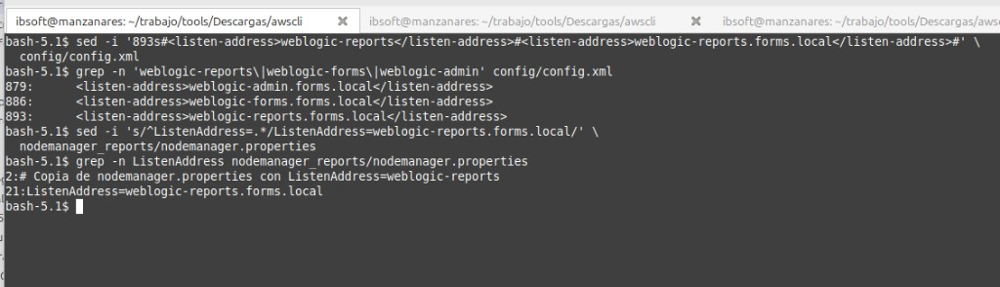
config.xml): línea 893 de
config/config.xml (ReportsMachine) y nodemanager_reports/nodemanager.properties
pasan a weblogic-reports.forms.local; las tres máquinas quedan con FQDN
WLS_REPORTSPendienteRequisito: forms-admin Running con AdminServer arriba en weblogic-admin.forms.local:7001.
boot.properties)mkdir -p "$DOMAIN_HOME/servers/WLS_REPORTS/security" cat > "$DOMAIN_HOME/servers/WLS_REPORTS/security/boot.properties" <<EOF username=weblogic password=<clave> EOF chmod 600 "$DOMAIN_HOME/servers/WLS_REPORTS/security/boot.properties"
export WLS_USER /
WLS_PW no sirve: startManagedWebLogic.sh las reinicia vacías.
No confundir con el boot.properties de Node Manager bajo .../data/nodemanager/.
ReportsMachine# En segundo plano, con log en el dominio nohup /u01/oracle/scripts/startNodeManager.sh \ > "$DOMAIN_HOME/nodemanager_reports/nm_console.out" 2>&1 & tail -f "$DOMAIN_HOME/nodemanager_reports/nodemanager.log" # Esperado: "Secure socket listener started on port 5556, host weblogic-reports.forms.local"
ReportsMachine también es obligatorio para crear la instancia de
Reports Tools (Paso 12e). La regla Todo el tráfico del SG (Paso 9) cubre el puerto 5556
entre forms-admin y reports-server.
WLS_REPORTSOpción recomendada — script startWLSReports.sh (como root o
oracle): valida boot.properties y el AdminServer, limpia .lok,
arranca en segundo plano y espera RUNNING + HTTP 200 de /reports/rwservlet:
/u01/oracle/scripts/startWLSReports.sh # Reinicio: pkill -f 'weblogic.Name=WLS_REPORTS'; sleep 10; /u01/oracle/scripts/startWLSReports.sh
Opción A — vía Node Manager: WebLogic 14.1.2 no trae la consola clásica; usar WebLogic Remote Console
(Servidores → WLS_REPORTS → Iniciar) o WLST:
connect(...); start('WLS_REPORTS','Server').
Opción B — script directo en el contenedor:
cd "$DOMAIN_HOME" nohup ./bin/startManagedWebLogic.sh WLS_REPORTS t3://weblogic-admin.forms.local:7001 \ > "$DOMAIN_HOME/servers/WLS_REPORTS/logs/WLS_REPORTS.out" 2>&1 & tail -f "$DOMAIN_HOME/servers/WLS_REPORTS/logs/WLS_REPORTS.out" # Esperado: <Server state changed to RUNNING.>
sleep infinity la tarea sigue
activa aunque la JVM muera. Validar con ps -ef | grep -E 'WLS_REPORTS|NodeManager'
y grep 'Server state changed to RUNNING' $DOMAIN_HOME/servers/WLS_REPORTS/logs/WLS_REPORTS.out (ver Paso 12b).
reports
Remote Console (o WLST) → Deployments → reports#14.1.2 → Targets: desmarcar AdminServer
y marcar WLS_REPORTS (o cluster_reports), si no se hizo al crear el dominio.
El Configuration Wizard no crea la instancia de Reports Tools ni $DOMAIN_HOME/reports.
WLS_REPORTS llega a RUNNING y /reports/rwservlet responde 200, pero el primer
reporte falla con REP-52266 / REP-51002. Detalle completo en la
guía de creación del dominio, Paso 7: Completar Reports.
ReportsMachine arriba (12b).reports-server (ECS Exec, su - oracle);
WLST se conecta al AdminServer por t3://weblogic-admin.forms.local:7001:
/u01/oracle/oracle_common/common/bin/wlst.sh /u01/oracle/scripts/create-reports-tools.pyEquivalente manual en WLST:
connect('weblogic','<clave>','t3://weblogic-admin.forms.local:7001')
createReportsToolsInstance(instanceName='reptools1', machine='ReportsMachine')
Si responde "Node Manager is not available on machine ReportsMachine", la instancia queda
registrada sin archivos. Levantar el Node Manager y crear otra (reptools2).
reports-server como oracle:
/u01/oracle/scripts/prepare-reports-domain.sh --check /u01/oracle/scripts/prepare-reports-domain.sh \ --source-dir /u01/oracle/user_projects/apps/reports_app/src \ --disable-securityCrea
reports/{bin,server,cache,temp,fonts} y copia rwengine.sh, reports.sh, etc.
desde $ORACLE_HOME/bin, sustituyendo $$domain_home$$, $$mw_home$$,
$$component_name$$ y %HOME%. Además fija sourceDir en
rwserver.conf y quita securityId="rwJaznSec" (DEV).
WLS_REPORTS con startWLSReports.sh (12c).Error (navegador / rwserver_diagnostic.log) | Elemento faltante |
|---|---|
REP-54005 cache directory cannot be created | reports/cache |
REP-56022 / REP-50125 rwengine.sh: error=2 | reports/bin (lanzadores) |
REP-50141 rep_wls_reports_weblogic-reports.dat cannot be opened | reports/server |
Pantalla "System User Authentication" / REP-51019 | Seguridad activa (securityId) |
grep -E 'REP-|rwEng' $DOMAIN_HOME/servers/WLS_REPORTS/logs/reports/rwserver_diagnostic.log | tail -15
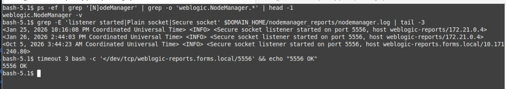
ReportsMachine corriendo y escuchando en 5556. La última línea del log
(5 de octubre de 2026) ya muestra host weblogic-reports.forms.local/10.171.240.80; las de enero son del entorno
compose (weblogic-reports/172.21.0.4). La conexión a weblogic-reports.forms.local:5556 responde OK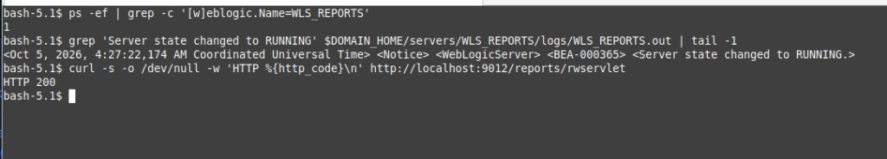
WLS_REPORTS en estado RUNNING: un proceso weblogic.Name=WLS_REPORTS,
<Server state changed to RUNNING.> (BEA-000365, 5 de octubre de 2026) en WLS_REPORTS.out y
/reports/rwservlet responde HTTP 200. WebLogic 14.1.2 no trae la consola clásica, así que la
verificación se hace por terminal (o con WebLogic Remote Console)Validación con reportes modelo de referencia (definiciones sencillas, sin lógica de negocio), para comprobar que Reports Server responde en la arquitectura containerizada y que la conexión a la BD funciona.
| Prueba | URL / comando | Resultado esperado |
|---|---|---|
| Servlet activo | http://<IP_PUBLICA>:9012/reports/rwservlet |
Página de bienvenida de Oracle Reports Services |
| Info del server in-process | http://<IP_PUBLICA>:9012/reports/rwservlet/getserverinfo?authid=weblogic/<clave> |
Nombre del Reports Server, engines y estado. Sin authid responde REP-51019, lo cual es normal
(es un comando administrativo). Con REP-56071, falta el rol RW_ADMINISTRATOR (opcional). |
| Cola de trabajos | http://<IP_PUBLICA>:9012/reports/rwservlet/showjobs |
Lista de jobs (vacía al inicio) |
| Reporte modelo con BD | …/rwservlet?report=<modelo>.rdf&userid=<usr>/<pwd>@<TNS>&destype=cache&desformat=PDF |
PDF generado con datos de la BD |
Caso de prueba validado: CARR30015.rdf |
http://<IP_PUBLICA>:9012/reports/rwservlet?report=CARR30015.rdf&userid=uspan/<clave>@BANESCO_DEV&destype=cache&desformat=pdf&nu_sec=205873 |
PDF con datos (probado OK sobre 54.81.150.92) |
CARR30015.rdf:
nu_sec=205873 es una secuencia que debe existir y ser válida en la BD
BANESCO_DEV. Si no existe, o la BD se refresca y cambia, el reporte sale vacío o con error:
usar una secuencia vigente.userid es obligatorio. Sin él, el motor no puede compilar el PL/SQL del RDF contra la BD y responde
REP-1247: Uncompiled program units exist.mode=bitmap, a diferencia de SINR30032.rdf, que está definido en modo carácter
(REP-1920).BANESCO_DEV debe existir en $TNS_ADMIN/tnsnames.ora, y la BD debe estar encendida.Desde dentro del contenedor (sin depender del SG):
curl -s -o /dev/null -w '%{http_code}\n' http://localhost:9012/reports/rwservlet
curl -s http://localhost:9012/reports/rwservlet/getserverinfo | head -50
tnsnames.ora que lee Reports
($DOMAIN_HOME/config/fmwconfig/tnsnames.ora o el definido en TNS_ADMIN),
apuntando a 192.168.229.137:1521. Los .rdf se leen del sourceDir
configurado en el Paso 12e (/u01/oracle/user_projects/apps/reports_app/src, EFS).
| Respuesta al invocar el reporte | Causa / acción |
|---|---|
REP-52266 / REP-51002 | Falta algún elemento del Paso 12e; ver rwserver_diagnostic.log. |
Petición colgada + incidente DFW-99998 UnsatisfiedLinkError: librwu.so: libXm.so.4 | Imagen r1: pasar la TD a r2 (anexo). |
| Pantalla "System User Authentication" | Seguridad de Reports activa: prepare-reports-domain.sh --disable-security o agregar &authid=. |
REP-1247: Uncompiled program units exist | Falta userid en la URL (el motor no puede compilar el PL/SQL), faltan .pll adjuntas en sourceDir o hay objetos inválidos en la BD. Diagnóstico: rwconverter.sh ... compile_all=yes logfile=.... |
REP-1920: Character mode runtime is incompatible with DESFORMAT of PDF... | RDF en modo carácter: agregar &mode=bitmap o cambiar Mode = Bitmap en Reports Builder. |
| PDF en blanco | Sin datos (parámetros faltantes; probar desformat=XML) o sin fuentes en $DOMAIN_HOME/reports/fonts. |
REP-0501 / ORA-12170, revisar primero la conectividad
TCP a 192.168.229.137:1521 (Paso 10) y el alias TNS; ver el
anexo de red hacia BD de la guía Forms.
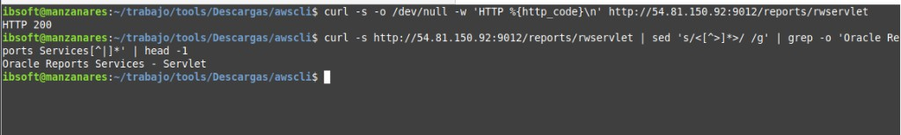
rwservlet respondiendo en el puerto 9012 desde fuera de AWS:
curl a http://54.81.150.92:9012/reports/rwservlet devuelve HTTP 200 y la página
"Oracle Reports Services - Servlet"
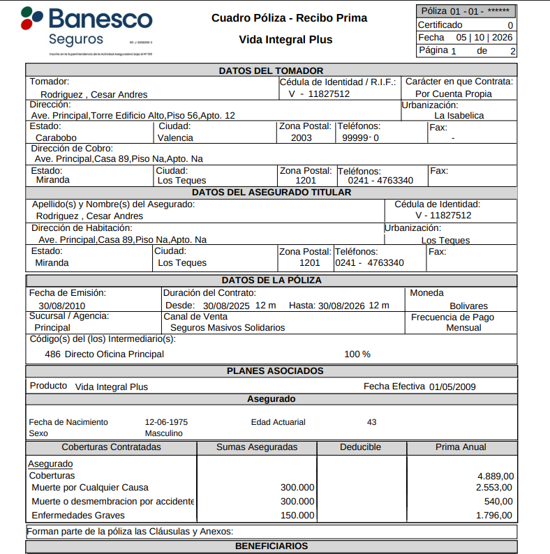
CARR30015.rdf con nu_sec=205873: PDF "Cuadro Póliza - Recibo Prima"
(Vida Integral Plus) generado por WLS_REPORTS con datos de BANESCO_DEV
(…/rwservlet?report=CARR30015.rdf&userid=uspan/<clave>@BANESCO_DEV&destype=cache&desformat=pdf&nu_sec=205873)
reports-server)
Equivalente a los Pasos 1–5, derivado de forms-server:9. Puede pegarse en
ECS → Crear nueva definición de tarea con JSON o registrarse por CLI.
Usa la imagen forms-docker:r2 (librerías del motor de Reports); se puede fijar al digest
de r2 que muestra ECR. Sustituir la contraseña.
forms-server:9 (respecto de la revisión 8): se agregaron
variables de entorno de compilación y conexión. En Reports solo aplica TNS_ADMIN
(mismo dominio, conexión a la BD). No se copian las de compilación Forms
(FORMS_PATH, FORMS_MODULE_PATH, FORMS_INSTANCE,
FRMCMP) ni las de ProC (PROC, PCSCFG,
PROC_INCLUDE, CC): esa compilación se hace en forms-server.
{
"family": "reports-server",
"taskRoleArn": "arn:aws:iam::730335573515:role/ecs-forms-admin-task-role",
"executionRoleArn": "arn:aws:iam::730335573515:role/ecsTaskExecutionRole",
"networkMode": "awsvpc",
"requiresCompatibilities": ["FARGATE"],
"runtimePlatform": { "cpuArchitecture": "X86_64", "operatingSystemFamily": "LINUX" },
"cpu": "2048",
"memory": "4096",
"ephemeralStorage": { "sizeInGiB": 100 },
"containerDefinitions": [
{
"name": "reports-server",
"image": "730335573515.dkr.ecr.us-east-1.amazonaws.com/forms-docker:r2",
"essential": true,
"entryPoint": ["sh", "-c"],
"command": ["sleep infinity"],
"workingDirectory": "/u01/oracle",
"portMappings": [
{ "containerPort": 9012, "hostPort": 9012, "protocol": "tcp", "name": "wls-reports-http", "appProtocol": "http" },
{ "containerPort": 9512, "hostPort": 9512, "protocol": "tcp", "name": "wls-reports-https", "appProtocol": "http" },
{ "containerPort": 9992, "hostPort": 9992, "protocol": "tcp", "name": "wls-reports-admin" },
{ "containerPort": 5556, "hostPort": 5556, "protocol": "tcp", "name": "nodemanager" }
],
"environment": [
{ "name": "ORACLE_HOME", "value": "/u01/oracle" },
{ "name": "DOMAIN_NAME", "value": "forms_domain" },
{ "name": "DOMAIN_HOME", "value": "/u01/oracle/user_projects/domains/forms_domain" },
{ "name": "TNS_ADMIN", "value": "/u01/oracle/user_projects/domains/forms_domain/config/fmwconfig" },
{ "name": "ADMIN_SERVER_NAME", "value": "AdminServer" },
{ "name": "ADMIN_SERVER_HOST", "value": "weblogic-admin.forms.local" },
{ "name": "ADMIN_SERVER_PORT", "value": "7001" },
{ "name": "ADMIN_USER", "value": "weblogic" },
{ "name": "ADMIN_PASSWORD", "value": "<CLAVE>" },
{ "name": "MANAGED_SERVER_NAME", "value": "WLS_REPORTS" },
{ "name": "MANAGED_SERVER_PORT", "value": "9012" },
{ "name": "NODE_MANAGER_PORT", "value": "5556" },
{ "name": "LD_LIBRARY_PATH", "value": "/u01/oracle/lib:/u01/oracle/oracle_common/lib" },
{ "name": "PATH", "value": "/u01/oracle/bin:/u01/oracle/oracle_common/bin:/usr/local/sbin:/usr/local/bin:/usr/sbin:/usr/bin:/sbin:/bin" }
],
"mountPoints": [
{ "sourceVolume": "efs-domains", "containerPath": "/u01/oracle/user_projects/domains", "readOnly": false },
{ "sourceVolume": "efs-app", "containerPath": "/u01/oracle/user_projects/apps", "readOnly": false },
{ "sourceVolume": "efs-scripts", "containerPath": "/u01/oracle/scripts", "readOnly": false }
],
"logConfiguration": {
"logDriver": "awslogs",
"options": {
"awslogs-group": "/ecs/reports-server",
"awslogs-create-group": "true",
"awslogs-region": "us-east-1",
"awslogs-stream-prefix": "ecs"
}
}
}
],
"volumes": [
{
"name": "efs-domains",
"efsVolumeConfiguration": {
"fileSystemId": "fs-08471cc88d2a8edc3",
"rootDirectory": "/aws-backup-restore_2020-04-19T22-54-07-041Z/domain_forms/domains",
"transitEncryption": "ENABLED"
}
},
{
"name": "efs-app",
"efsVolumeConfiguration": {
"fileSystemId": "fs-08471cc88d2a8edc3",
"rootDirectory": "/aws-backup-restore_2020-04-19T22-54-07-041Z/domain_forms/app",
"transitEncryption": "ENABLED"
}
},
{
"name": "efs-scripts",
"efsVolumeConfiguration": {
"fileSystemId": "fs-08471cc88d2a8edc3",
"rootDirectory": "/aws-backup-restore_2020-04-19T22-54-07-041Z/domain_forms/scripts/reports",
"transitEncryption": "ENABLED"
}
}
]
}
conf_json/reports-server.json junto a
forms-admin.json y forms-server.json. Ese archivo ya trae la
contraseña de pruebas (igual que forms-server.json) para registrarlo directo por CLI.
r2: construir, subir a ECR y actualizar servicios
r2 = r1 + motif libX11 libXext libXt libXp, necesarias para librw.so /
librwu.so del motor de Reports. Las imágenes nuevas construidas con el Dockerfile.wls actual
ya las incluyen (Crear imagen, puntos 4.e y 7.a).
r2 a partir de r1 (local)cd dist/html/docker/crear_imagen
docker build -f Dockerfile.r2 \
--build-arg BASE_IMAGE=image_forms_14.1.2:r1 \
--build-arg RUN_USER=$(docker inspect -f '{{.Config.User}}' image_forms_14.1.2:r1) \
-t image_forms_14.1.2:r2 .
aws ecr get-login-password --region us-east-1 | \ docker login --username AWS --password-stdin 730335573515.dkr.ecr.us-east-1.amazonaws.com docker tag image_forms_14.1.2:r2 730335573515.dkr.ecr.us-east-1.amazonaws.com/forms-docker:r2 docker push 730335573515.dkr.ecr.us-east-1.amazonaws.com/forms-docker:r2
Consola: TD → última revisión → Crear nueva revisión → contenedor → URI de imagen
…/forms-docker:r2 → Crear. Luego, en el servicio: Actualizar → nueva revisión →
Forzar nueva implementación. Repetir para forms-admin, forms-server y
reports-server.
aws ecs update-service --cluster forms_report --service reports-server \ --task-definition reports-server --force-new-deployment --region us-east-1
sleep infinity, cada redeploy reinicia el contenedor sin WebLogic: hay que volver a arrancar
AdminServer, Node Manager y los managed (Pasos 12b–12c). El dominio, reports/ y los scripts
persisten en EFS, así que el Paso 12e no se repite.
for f in /u01/oracle/lib/librw*.so; do ldd "$f" | grep 'not found'; done | sort -u # Sin salida = OK
us-east-1, cluster forms_report. Los comandos de diagnóstico de
subnets, rutas, SG y EFS son los mismos de la
guía Forms.
aws ecs register-task-definition \ --cli-input-json file://conf_json/reports-server.json \ --region us-east-1
weblogic-reportsSolo si se crea el servicio ECS por CLI (desde la consola se crea en el Paso 8).
aws servicediscovery create-service \
--name weblogic-reports \
--namespace-id ns-r3zqawwpjtp5pzue \
--dns-config 'NamespaceId=ns-r3zqawwpjtp5pzue,RoutingPolicy=MULTIVALUE,DnsRecords=[{Type=A,TTL=15}]' \
--health-check-custom-config FailureThreshold=1 \
--region us-east-1 \
--query 'Service.Arn' --output text
aws ecs create-service \
--cluster forms_report \
--service-name reports-server \
--task-definition reports-server \
--desired-count 1 \
--launch-type FARGATE \
--platform-version LATEST \
--enable-execute-command \
--deployment-configuration 'minimumHealthyPercent=0,maximumPercent=200' \
--network-configuration 'awsvpcConfiguration={subnets=[subnet-01212efd4a9ce759b],securityGroups=[sg-0e1787d32bac71fcd],assignPublicIp=ENABLED}' \
--service-registries 'registryArn=<ARN_SERVICIO_CLOUDMAP_WEBLOGIC_REPORTS>' \
--region us-east-1
aws ec2 authorize-security-group-ingress \ --group-id sg-0e1787d32bac71fcd \ --protocol tcp --port 9012 \ --cidr <MI_IP>/32 \ --region us-east-1
TASK_ARN=$(aws ecs list-tasks --cluster forms_report --service-name reports-server \
--region us-east-1 --query 'taskArns[0]' --output text)
ENI=$(aws ecs describe-tasks --cluster forms_report --tasks "$TASK_ARN" --region us-east-1 \
--query "tasks[0].attachments[0].details[?name=='networkInterfaceId'].value" --output text)
aws ec2 describe-network-interfaces --network-interface-ids "$ENI" --region us-east-1 \
--query 'NetworkInterfaces[0].{Privada:PrivateIpAddress,Publica:Association.PublicIp}' --output table
# Motivo de parada si la tarea no queda RUNNING
aws ecs describe-tasks --cluster forms_report --tasks "$TASK_ARN" --region us-east-1 \
--query 'tasks[0].{status:lastStatus,stopped:stoppedReason,container:containers[0].reason}'
aws logs tail /ecs/reports-server --follow --region us-east-1
aws ecs describe-services --cluster forms_report --services reports-server \ --region us-east-1 --output json > conf_json/reports-server-service.json aws ecs describe-task-definition --task-definition reports-server \ --region us-east-1 --query taskDefinition --output json > conf_json/reports-server.json
| Concepto | Admin | Forms | Reports |
|---|---|---|---|
| Servicio | forms-admin | forms-server | reports-server |
| Contenedor | admin | forms-server | reports-server |
| Discovery | weblogic-admin | weblogic-forms | weblogic-reports |
| Scripts EFS | scripts/admin | scripts/forms | scripts/reports |
| Log group | /ecs/forms-admin | /ecs/forms-server | /ecs/reports-server |
Heredadas del levantamiento de Forms (aplican igual a Reports):
no space left on device al descomprimir la imagen.sleep infinity y PATH (Paso 3) — no redefinir PATH con ${PATH}: ECS no lo expande y sleep deja de encontrarse./ecs/reports-server creado a mano (Paso 5) — ecsTaskExecutionRole no tiene logs:CreateLogGroup; aunque la TD lleva awslogs-create-group=true, la tarea falla con ResourceInitializationError ... AccessDeniedException ... logs:CreateLogGroup. Crear el grupo en CloudWatch y forzar nueva implementación.pub-A en el servicio (Paso 9) — si la tarea cae en database-A, la IP pública no responde.Pub-RT — 192.168.229.137/32 → pcx-0ad20c217472c7080 ya configurada; no hay que repetirla.forms-sg-ecs; si Reports usara otro SG, habría que añadirlo.WLS_REPORTS queda en Delaying formation of a new cluster y a los 300 s pasa a FAILED (RequestTimeoutException ... Name=Cluster).weblogic-reports sin sufijo provoca UnknownHostException en Node Manager y deja a WLS_REPORTS fuera del WKA de Coherence (Hostname weblogic-reports ... failed to resolve): si WLS_FORMS no responde, Reports pasa a FAILED a los 300 s. Ejecutar set-cloudmap-hostnames.sh antes del primer arranque.oracle (Paso 10) — trabajar con su - oracle, no como root.boot.properties del managed (Paso 12a) — necesario para arranque sin prompt de credenciales.librw.so, librwu.so) necesita libXm.so.4, libX11, libXext, libXt, libXp. Sin ellas, la primera petición a rwservlet queda colgada y aparece el incidente DFW-99998 [java.lang.UnsatisfiedLinkError][oracle.reports.util.EnvironmentGlobal.<init>]. Instalar motif libX11 libXext libXt libXp en el Dockerfile (runtime stage); en ECR es el tag r2 (anexo).Específicas de Reports:
5558:5556 de compose no aplica en Fargate (usar 5556).scripts/reports en EFS (Paso 0) — debe existir antes de lanzar la tarea, o falla el montaje del volumen.nodemanager_reports (no el nodemanager del admin); su ListenAddress debe ser weblogic-reports.forms.local.rwEng consumen memoria aparte de la JVM; subir a 8 GB si hay OutOfMemory / exit 137.reports#14.1.2 (Paso 12d) — si sigue en AdminServer, /reports/rwservlet no responde en 9012.sourceDir (Paso 12e / 13) — el alias de BD y la ruta de los .rdf deben estar en EFS para que sobrevivan a un redeploy.$DOMAIN_HOME/reports/{bin,server,cache,temp,fonts}. rwservlet responde 200, pero el reporte da REP-52266/REP-51002; la causa real (REP-54005, REP-56022, REP-50141) solo aparece en rwserver_diagnostic.log.createReportsToolsInstance necesita el Node Manager de ReportsMachine — sin él, la instancia queda registrada pero sin archivos.$ORACLE_HOME/bin/rwengine.sh y reports.sh traen $$domain_home$$, $$mw_home$$, $$component_name$$ y %HOME%; copiarlos sin sustituir no funciona (prepare-reports-domain.sh lo hace).securityId="rwJaznSec" pide usuario en cada reporte; en DEV se elimina del job.REP-1920 con desformat=PDF; usar mode=bitmap.jps-config-jse.xml, opss-datasource-jdbc.xml, etc.).
Documentación ECS Reports — capturas en assets/. Basada en ECS Forms.